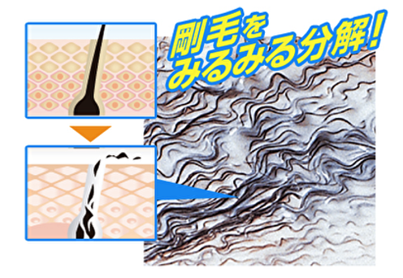
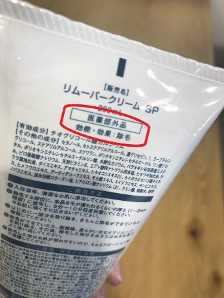
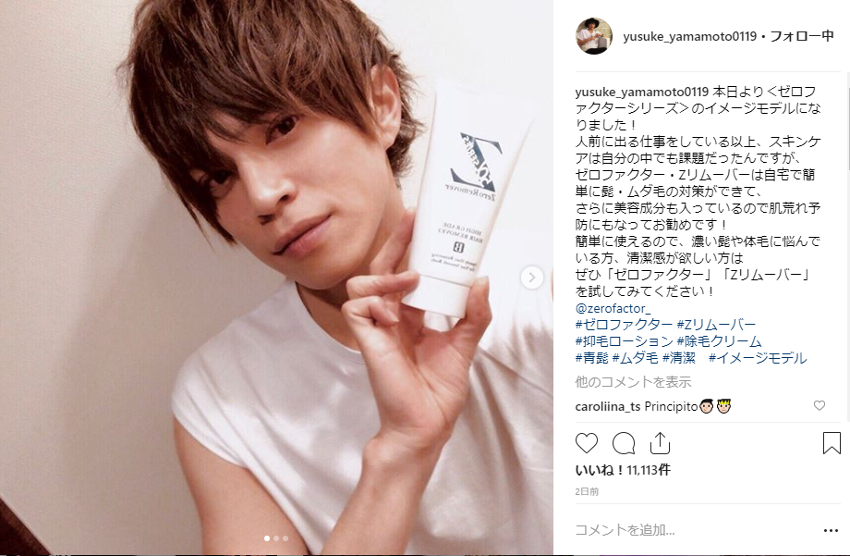

【剛毛男子必見】
自宅で全身除毛をして、 夏を楽しもう!

剛毛男子のみなさん、朗報です!!
今、SNS やメディアで
“自宅で簡単にできる全身除毛がある”
と話題になっている除毛法をご存知ですか?
☑なるべく楽に全身除毛したい
☑カミソリでの処理は面倒
☑脱毛サロンに行くのは高いし抵抗がある
☑清潔感をゲットして可愛い彼女がほしい
もし、あなたがこんな悩みを抱えているのなら、ぜひ試してほしいのです!

◆効果がスゴイ理由
Zリムーバーについてまとめてみました。

Zリムーバーは、「剛毛な男性でも除毛できるように」開発された除毛剤です。
市販の一般的な除毛剤の多くは女性用で除毛力が弱く、容量も少ない為、
全身の剛毛を一掃するにはやや力不足...。
しかし、Zリムーバーは「チオグリコール酸カルシウム」という体毛分解成分が、
濃い体毛にも力を発揮します。

「チオグリコール酸カルシウム」が、皮膚の中に浸透し、根元からしっかり除毛。
カミソリのように、肌の表面だけを剃るのとは全く違います!

表面だけを剃るカミソリでは、すぐに毛が再生してしまうのです...。
しかも!
男性の濃いムダ毛でも毛の根っこから一掃してくれて、
画期的にツルツルになる効果があることから
業界でも珍しい医薬部外品の除毛剤です!

美容成分も高配合しているので肌荒れの心配も少ないです。
人気俳優の山本裕典さんがイメージモデルでSNSでも紹介しています!
